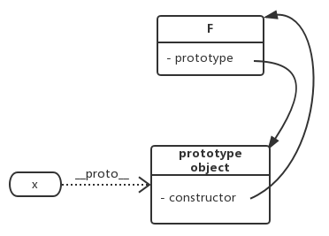

Every variable can be used as a object, except for undefined and null . Even number literal has its dot operation if the dot is not parsed as float point.
2.toString(); // SyntaxError
2..toString(); // valid
2 .toString(); // valid
(2).toString(); //valid
However, javascript distinguish object data types (including function object and array object) from primary data types (Number, String, …)
var a = 3;
a.x = 2; //invalid, a.x is undifiend
var b = [3, 2];
b.x = 2; //valid
function foo(){}
foo.x = 2; //valid
var c = {}
c.x = 2; //valid
var s = "str";
s.x = 2; //invalid
object can be used as hash tables. A property can be accessed in two ways: dot operation and [] operation. They are equivalent, except that [] operation can be used in following two cases while dot operation can’t:
Objects created using {} are inherited form Object.prototype. A property can only be deleted using delete operation
this can only be used inside of function, it always refers to the caller of this function.
this may refers to global
var x = 1;
function test(){
alert(this.x);
}
test(); // 1
this in constructor function
var x = 2;
function test(){
this.x = 1;
}
var o = new test();
alert(x); //2
alert(o.x); //1
this in bound function: apply, call
var x = 0;
function test(){
alert(this.x);
}
var o = {};
o.x = 1;
o.m = test;
o.m.apply(); //0
o.m.apply(o); //1
We distinguish __proto__ from prototype
Every object (include function object) has an implicit __proto__ property. It is this property that implements prototype chain.
function getProperty(obj, prop) {
if (obj.hasOwnProperty(prop))
return obj[prop]
else if (obj.__proto__ !== null)
return getProperty(obj.__proto__, prop)
else
return undefined
}
Note: The
in,for inoperations will search upward the prototype chain, usehasOwnPropertyas filter if needed.
Every constructor function has a property prototype, which is an empty object by default. If variable x is constructed (using new) by function F, then x.__proto__ === F.prototype
Here is how new works:
function New (F) {
var n = { '__proto__': f.prototype };
return function () {
F.apply(n, arguments);
return n;
};
}

3. x = new f() doesn’t implement “x inherits another object”. However, Douglas Crockford found a way to exploit the new operator to do real Prototypal Inheritance!
js Object.create = function (parent) { function F() {} F.prototype = parent; return new F(); };
4. Instance object (object that is not function) don’t have prototype (undefined). This prototype has a constructor property. Whenever a constructor’s prototype is manually modified, its constructor should be maintained properly. ( to ensure the correctness of operations like this.constructor.prototype.constructor.prototype and instance of)
```js
function Animal() {
this.species = “动物”;
}
function Cat(name, color) {
this.name = name;
this.color = color;
}
Cat.prototype = new Animal();
Cat.prototype.constructor = Cat;
var cat1 = new Cat("大毛","黄色");
alert(cat1.species); // 动物
```
The code above implement that "Cat inherit Animal", which is actually "cat1 inherits new Animal()"
>* Not standard: *\_\_proto__* is non-standard and even deprecated. Also native Object.create and Douglas Crockford implementation are not exactly equivalent.
>* Not optimized: Object.create (native or custom) has not yet been as heavily optimized as the new construction. It can be up to 10 times slower.
References:
Javascript – How Prototypal Inheritance really works (by vjeux)
原型继承 (by 廖雪峰)
Javascript继承机制的设计思想 (by 阮一锋)
Javascript面向对象编程（二）：构造函数的继承 (by 阮一锋)
Prototypal inheritance